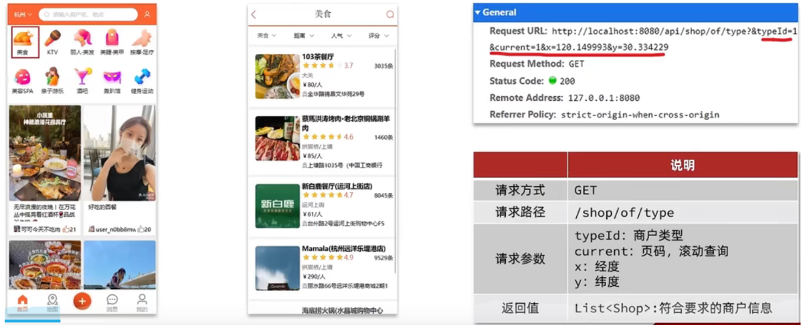
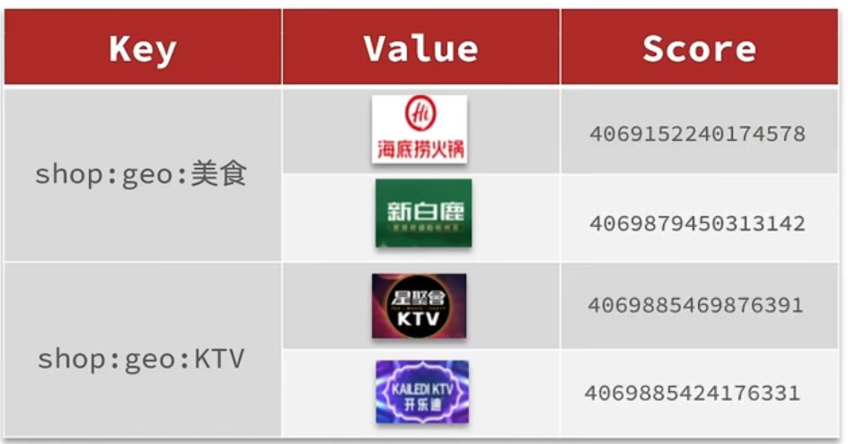
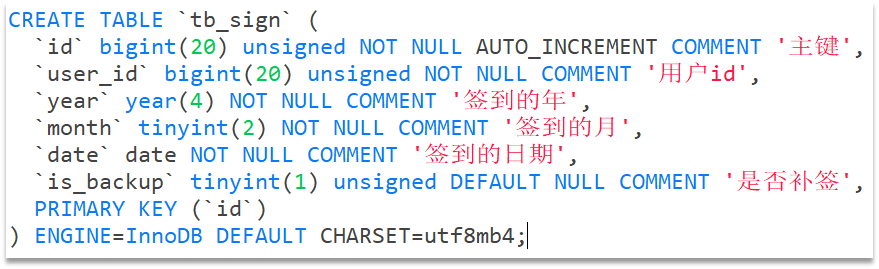
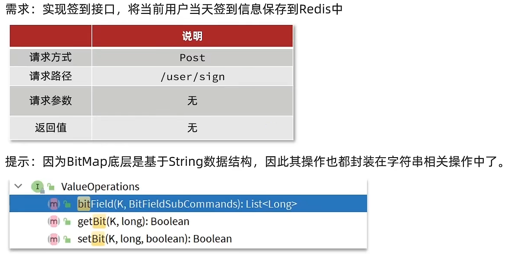
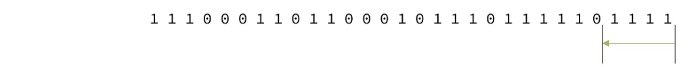
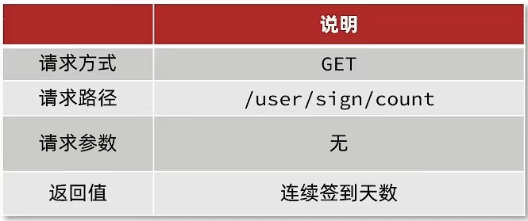
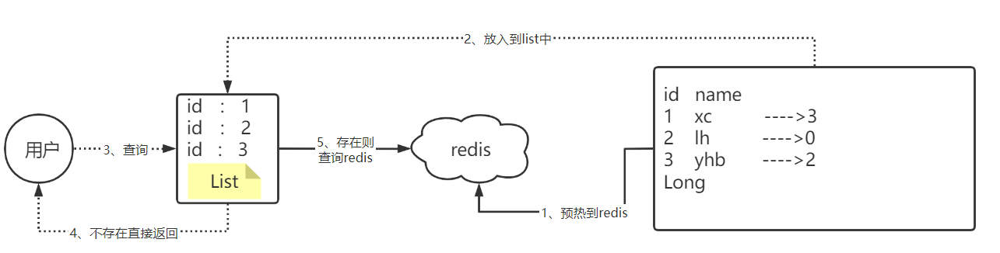
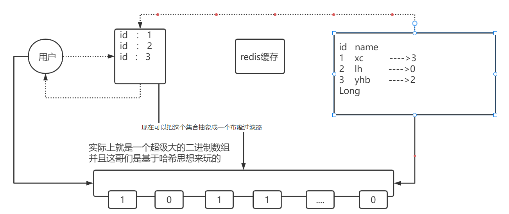
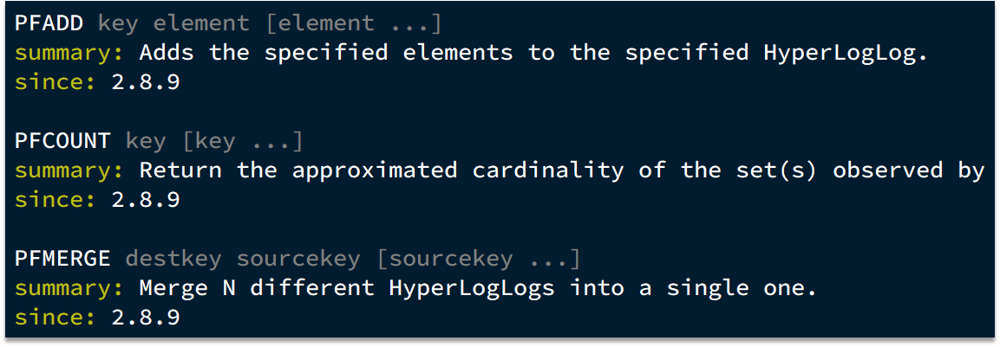
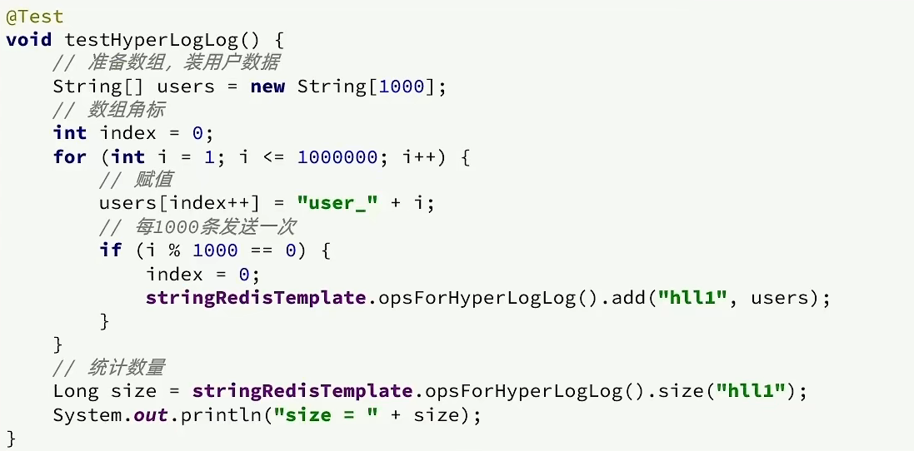

Redis：GEO、Bitmap 与 UV 统计
项目篇除了最后使用 redis 实现消息队列 其他都要全部 摸清原理
后面学的也是思路 和 结构知识 :
10、附近商户 (GEO数据结构)
10.1、附近商户-GEO数据结构的基本用法 有序集合（Sorted Set）--> 底层会实现一个 自动相互关联的数据 ;
GEO就是Geolocation的简写形式，代表地理坐标。Redis在3.2版本中加入了对GEO的支持，允许存储地理坐标信息，帮助我们根据经纬度来检索数据。常见的命令有：
- GEOADD：添加一个地理空间信息，包含：经度（longitude）、纬度（latitude）、值（member）
- GEODIST：计算指定的两个点之间的距离并返回
- GEOHASH：将指定member的坐标转为hash字符串形式并返回
- GEOPOS：返回指定member的坐标
- GEORADIUS：指定圆心、半径，找到该圆内包含的所有member，并按照与圆心之间的距离排序后返回。6.以后已废弃
- GEOSEARCH：在指定范围内搜索member，并按照与指定点之间的距离排序后返回。范围可以是圆形或矩形。6.2.新功能
- GEOSEARCHSTORE：与GEOSEARCH功能一致，不过可以把结果存储到一个指定的key。 6.2.新功能
实例 :
内部存储的格式 -- > sorted Set 格式
GEOADD 键名 地理位置名 地理位置的经纬度
GEODIST 键名 地理1 地理2
GEOSEARCH 键名 FROMLONLAT(经纬度) (经度 , 纬度 ) [圆心] BYRADIUS 100 km
圆形 vs 矩形对比
参数 | 形状 | 定义方式 | 使用场景 |
BYRADIUS | 圆形 | 半径 | "附近的人"、"周边门店" |
BYBOX | 矩形 | 宽+高 | "某个行政区域内"、"地图可视范围" |
10.2、 附近商户-导入店铺数据到GEO
具体场景说明：
[原笔记图片附件缺失：.\Redis实战篇.assets\1653822036941.png]

当我们点击美食之后，会出现一系列的商家，商家中可以按照多种排序方式，我们此时关注的是距离，这个地方就需要使用到我们的GEO，向后台传入当前app收集的地址(我们此处是写死的) ，以当前坐标作为圆心，同时绑定相同的店家类型type，以及分页信息，把这几个条件传入后台，后台查询出对应的数据再返回。
[原笔记图片附件缺失：.\Redis实战篇.assets\1653822021827.png]

我们要做的事情是：将数据库表中的数据导入到redis中去，redis中的GEO，GEO在redis中就一个menber和一个经纬度，我们把x和y轴传入到redis做的经纬度位置去，但我们不能把所有的数据都放入到menber中去，毕竟作为redis是一个内存级数据库，如果存海量数据，redis还是力不从心，所以我们在这个地方存储他的id即可。
但是这个时候还有一个问题，就是在redis中并没有存储type，所以我们无法根据type来对数据进行筛选，所以我们可以按照商户类型做分组，类型相同的商户作为同一组，以typeId为key存入同一个GEO集合中即可
代码
HmDianPingApplicationTests
@Test
void loadShopData() {
// 1.查询店铺信息
List<Shop> list = shopService.list();
// 2.把店铺分组，按照typeId分组，typeId一致的放到一个集合
Map<Long, List<Shop>> map = list.stream().collect(Collectors.groupingBy(Shop::getTypeId));
// 3.分批完成写入Redis
for (Map.Entry<Long, List<Shop>> entry : map.entrySet()) {
// 3.1.获取类型id
Long typeId = entry.getKey();
String key = SHOP_GEO_KEY + typeId;
// 3.2.获取同类型的店铺的集合
List<Shop> value = entry.getValue();
List<RedisGeoCommands.GeoLocation<String>> locations = new ArrayList<>(value.size());
// 3.3.写入redis GEOADD key 经度 纬度 member
for (Shop shop : value) {
// stringRedisTemplate.opsForGeo().add(key, new Point(shop.getX(), shop.getY()), shop.getId().toString());
locations.add(new RedisGeoCommands.GeoLocation<>(
shop.getId().toString(),
new Point(shop.getX(), shop.getY())
));
}
stringRedisTemplate.opsForGeo().add(key, locations);
}
}
10.3 附近商户-实现附近商户功能
SpringDataRedis的2.3.9版本并不支持Redis 6.2提供的GEOSEARCH命令，因此我们需要提示其版本，修改自己的POM
第一步：导入pom
<dependency>
<groupId>org.springframework.boot</groupId>
<artifactId>spring-boot-starter-data-redis</artifactId>
<exclusions>
<exclusion>
<artifactId>spring-data-redis</artifactId>
<groupId>org.springframework.data</groupId>
</exclusion>
<exclusion>
<artifactId>lettuce-core</artifactId>
<groupId>io.lettuce</groupId>
</exclusion>
</exclusions>
</dependency>
<dependency>
<groupId>org.springframework.data</groupId>
<artifactId>spring-data-redis</artifactId>
<version>2.6.2</version>
</dependency>
<dependency>
<groupId>io.lettuce</groupId>
<artifactId>lettuce-core</artifactId>
<version>6.1.6.RELEASE</version>
</dependency>
第二步：
ShopController
@GetMapping("/of/type")
public Result queryShopByType(
@RequestParam("typeId") Integer typeId,
@RequestParam(value = "current", defaultValue = "1") Integer current,
@RequestParam(value = "x", required = false) Double x,
@RequestParam(value = "y", required = false) Double y
) {
return shopService.queryShopByType(typeId, current, x, y);
}
ShopServiceImpl
@Override
public Result queryShopByType(Integer typeId, Integer current, Double x, Double y) {
// 1.判断是否需要根据坐标查询
if (x == null || y == null) {
// 不需要坐标查询，按数据库查询
Page<Shop> page = query()
.eq("type_id", typeId)
.page(new Page<>(current, SystemConstants.DEFAULT_PAGE_SIZE));
// 返回数据
return Result.ok(page.getRecords());
}
// 2.计算分页参数
int from = (current - 1) * SystemConstants.DEFAULT_PAGE_SIZE;
int end = current * SystemConstants.DEFAULT_PAGE_SIZE;
// 3.查询redis、按照距离排序、分页。结果：shopId、distance
String key = SHOP_GEO_KEY + typeId;
GeoResults<RedisGeoCommands.GeoLocation<String>> results = stringRedisTemplate.opsForGeo() // GEOSEARCH key BYLONLAT x y BYRADIUS 10 WITHDISTANCE
.search(
key,
GeoReference.fromCoordinate(x, y),
new Distance(5000),
RedisGeoCommands.GeoSearchCommandArgs.newGeoSearchArgs().includeDistance().limit(end)
);
// 4.解析出id
if (results == null) {
return Result.ok(Collections.emptyList());
}
List<GeoResult<RedisGeoCommands.GeoLocation<String>>> list = results.getContent();
if (list.size() <= from) {
// 没有下一页了，结束
return Result.ok(Collections.emptyList());
}
// 4.1.截取 from ~ end的部分
List<Long> ids = new ArrayList<>(list.size());
Map<String, Distance> distanceMap = new HashMap<>(list.size());
list.stream().skip(from).forEach(result -> {
// 4.2.获取店铺id
String shopIdStr = result.getContent().getName();
ids.add(Long.valueOf(shopIdStr));
// 4.3.获取距离
Distance distance = result.getDistance();
distanceMap.put(shopIdStr, distance);
});
// 5.根据id查询Shop
String idStr = StrUtil.join(",", ids);
List<Shop> shops = query().in("id", ids).last("ORDER BY FIELD(id," + idStr + ")").list();
for (Shop shop : shops) {
shop.setDistance(distanceMap.get(shop.getId().toString()).getValue());
}
// 6.返回
return Result.ok(shops);
}
11、用户签到
11.1、用户签到-BitMap功能演示
我们针对签到功能完全可以通过mysql来完成，比如说以下这张表
[原笔记图片附件缺失：.\Redis实战篇.assets\1653823145495.png]

用户一次签到，就是一条记录，假如有1000万用户，平均每人每年签到次数为10次，则这张表一年的数据量为 1亿条
每签到一次需要使用（8 + 8 + 1 + 1 + 3 + 1）共22 字节的内存，一个月则最多需要600多字节
我们如何能够简化一点呢？其实可以考虑小时候一个挺常见的方案，就是小时候，咱们准备一张小小的卡片，你只要签到就打上一个勾，我最后判断你是否签到，其实只需要到小卡片上看一看就知道了
我们可以采用类似这样的方案来实现我们的签到需求。
我们按月来统计用户签到信息，签到记录为1，未签到则记录为0.
把每一个bit位对应当月的每一天，形成了映射关系。用0和1标示业务状态，这种思路就称为位图（BitMap）。这样我们就用极小的空间，来实现了大量数据的表示
Redis中是利用string类型数据结构实现BitMap，因此最大上限是512M，转换为bit则是 2^32个bit位。
[原笔记图片附件缺失：.\Redis实战篇.assets\1653824498278.png] 
BitMap的操作命令有：
- SETBIT：向指定位置（offset）存入一个0或1
- GETBIT ：获取指定位置（offset）的bit值
- BITCOUNT ：统计BitMap中值为1的bit位的数量
- BITFIELD ：操作（查询、修改、自增）BitMap中bit数组中的指定位置（offset）的值
- BITFIELD_RO ：获取BitMap中bit数组，并以十进制形式返回
- BITOP ：将多个BitMap的结果做位运算（与 、或、异或）
- BITPOS ：查找bit数组中指定范围内第一个0或1出现的位置
SETBIT bm1 位置 0 / 1 ;
GETBIT bm1 位置 ;
BITCOUNT bm1 -- 查询 1 的个数
BITFILD bm1 GET u/i 数字(有无符号起始位置) 0/1 会返回十进制的数字 ---> 会读取前几位二进制转化的值
11.2 、用户签到-实现签到功能
需求：实现签到接口，将当前用户当天签到信息保存到Redis中
思路：我们可以把年和月作为bitMap的key，然后保存到一个bitMap中，每次签到就到对应的位上把数字从0变成1，只要对应是1，就表明说明这一天已经签到了，反之则没有签到。
我们通过接口文档发现，此接口并没有传递任何的参数，没有参数怎么确实是哪一天签到呢？这个很容易，可以通过后台代码直接获取即可，然后到对应的地址上去修改bitMap。
[原笔记图片附件缺失：.\Redis实战篇.assets\1653833970361.png]

代码
UserController
@PostMapping("/sign")
public Result sign(){
return userService.sign();
}
UserServiceImpl
@Override
public Result sign() {
// 1.获取当前登录用户
Long userId = UserHolder.getUser().getId();
// 2.获取日期
LocalDateTime now = LocalDateTime.now();
// 3.拼接key
String keySuffix = now.format(DateTimeFormatter.ofPattern(":yyyyMM"));
String key = USER_SIGN_KEY + userId + keySuffix;
// 4.获取今天是本月的第几天
int dayOfMonth = now.getDayOfMonth();
// 5.写入Redis SETBIT key offset 1
stringRedisTemplate.opsForValue().setBit(key, dayOfMonth - 1, true);
return Result.ok();
}
11.3 用户签到-签到统计
**问题1：**什么叫做连续签到天数？
[原笔记图片附件缺失：.\Redis实战篇.assets\1653834455899.png]

Java逻辑代码：获得当前这个月的最后一次签到数据，定义一个计数器，然后不停的向前统计，直到获得第一个非0的数字即可，每得到一个非0的数字计数器+1，直到遍历完所有的数据，就可以获得当前月的签到总天数了
**问题2：**如何得到本月到今天为止的所有签到数据？
BITFIELD key GET u[dayOfMonth] 0
假设今天是10号，那么我们就可以从当前月的第一天开始，获得到当前这一天的位数，是10号，那么就是10位，去拿这段时间的数据，就能拿到所有的数据了，那么这10天里边签到了多少次呢？统计有多少个1即可。
问题3：如何从后向前遍历每个bit位？
注意：bitMap返回的数据是10进制，哪假如说返回一个数字8，那么我哪儿知道到底哪些是0，哪些是1呢？我们只需要让得到的10进制数字和1做与运算就可以了，因为1只有遇见1 才是1，其他数字都是0 ，我们把签到结果和1进行与操作，每与一次，就把签到结果向右移动一位，依次内推，我们就能完成逐个遍历的效果了。
需求：实现下面接口，统计当前用户截止当前时间在本月的连续签到天数
有用户有时间我们就可以组织出对应的key，此时就能找到这个用户截止这天的所有签到记录，再根据这套算法，就能统计出来他连续签到的次数了

[原笔记图片附件缺失：.\Redis实战篇.assets\1653835784444.png]
代码
UserController
@GetMapping("/sign/count")
public Result signCount(){
return userService.signCount();
}
UserServiceImpl
@Override
public Result signCount() {
// 1.获取当前登录用户
Long userId = UserHolder.getUser().getId();
// 2.获取日期
LocalDateTime now = LocalDateTime.now();
// 3.拼接key
String keySuffix = now.format(DateTimeFormatter.ofPattern(":yyyyMM"));
String key = USER_SIGN_KEY + userId + keySuffix;
// 4.获取今天是本月的第几天
int dayOfMonth = now.getDayOfMonth();
// 5.获取本月截止今天为止的所有的签到记录，返回的是一个十进制的数字 BITFIELD sign:5:202203 GET u14 0
List<Long> result = stringRedisTemplate.opsForValue().bitField(
key,
BitFieldSubCommands.create()
.get(BitFieldSubCommands.BitFieldType.unsigned(dayOfMonth)).valueAt(0)
);
if (result == null || result.isEmpty()) {
// 没有任何签到结果
return Result.ok(0);
}
Long num = result.get(0);
if (num == null || num == 0) {
return Result.ok(0);
}
// 6.循环遍历
int count = 0;
while (true) {
// 6.1.让这个数字与1做与运算，得到数字的最后一个bit位 // 判断这个bit位是否为0
if ((num & 1) == 0) {
// 如果为0，说明未签到，结束
break;
}else {
// 如果不为0，说明已签到，计数器+1
count++;
}
// 把数字右移一位，抛弃最后一个bit位，继续下一个bit位
num >>>= 1;
}
return Result.ok(count);
}
11.4 额外加餐-关于使用bitmap来解决缓存穿透的方案
回顾缓存穿透：
发起了一个数据库不存在的，redis里边也不存在的数据，通常你可以把他看成一个攻击
解决方案：
- 判断id<0
- 如果数据库是空，那么就可以直接往redis里边把这个空数据缓存起来
第一种解决方案：遇到的问题是如果用户访问的是id不存在的数据，则此时就无法生效
第二种解决方案：遇到的问题是：如果是不同的id那就可以防止下次过来直击数据
所以我们如何解决呢？
我们可以将数据库的数据，所对应的id写入到一个list集合中，当用户过来访问的时候，我们直接去判断list中是否包含当前的要查询的数据，如果说用户要查询的id数据并不在list集合中，则直接返回，如果list中包含对应查询的id数据，则说明不是一次缓存穿透数据，则直接放行。
[原笔记图片附件缺失：.\Redis实战篇.assets\1653836416586.png]

现在的问题是这个主键其实并没有那么短，而是很长的一个 主键
哪怕你单独去提取这个主键，但是在11年左右，淘宝的商品总量就已经超过10亿个
所以如果采用以上方案，这个list也会很大，所以我们可以使用bitmap来减少list的存储空间
我们可以把list数据抽象成一个非常大的bitmap，我们不再使用list，而是将db中的id数据利用哈希思想，比如：
id % bitmap.size = 算出当前这个id对应应该落在bitmap的哪个索引上，然后将这个值从0变成1，然后当用户来查询数据时，此时已经没有了list，让用户用他查询的id去用相同的哈希算法， 算出来当前这个id应当落在bitmap的哪一位，然后判断这一位是0，还是1，如果是0则表明这一位上的数据一定不存在， 采用这种方式来处理，需要重点考虑一个事情，就是误差率，所谓的误差率就是指当发生哈希冲突的时候，产生的误差。

[原笔记图片附件缺失：.\Redis实战篇.assets\1653836578970.png]
12、UV统计
12.1 、UV统计-HyperLogLog
首先我们搞懂两个概念：
- UV：全称Unique Visitor，也叫独立访客量，是指通过互联网访问、浏览这个网页的自然人。1天内同一个用户多次访问该网站，只记录1次。
- PV：全称Page View，也叫页面访问量或点击量，用户每访问网站的一个页面，记录1次PV，用户多次打开页面，则记录多次PV。往往用来衡量网站的流量。
通常来说UV会比PV大很多，所以衡量同一个网站的访问量，我们需要综合考虑很多因素，所以我们只是单纯的把这两个值作为一个参考值
UV统计在服务端做会比较麻烦，因为要判断该用户是否已经统计过了，需要将统计过的用户信息保存。但是如果每个访问的用户都保存到Redis中，数据量会非常恐怖，那怎么处理呢？
Hyperloglog(HLL)是从Loglog算法派生的概率算法，用于确定非常大的集合的基数，而不需要存储其所有值。相关算法原理大家可以参考：https://juejin.cn/post/6844903785744056333#heading-0
永远小于16kb，内存占用低的令人发指！作为代价，其测量结果是概率性的，有小于0.81％的误差。不过对于UV统计来说，这完全可以忽略。
[原笔记图片附件缺失：.\Redis实战篇.assets\1653837988985.png]

12.2 UV统计-测试百万数据的统计
测试思路：我们直接利用单元测试，向HyperLogLog中添加100万条数据，看看内存占用和统计效果如何
[原笔记图片附件缺失：.\Redis实战篇.assets\1653838053608.png]

经过测试：我们会发生他的误差是在允许范围内，并且内存占用极小